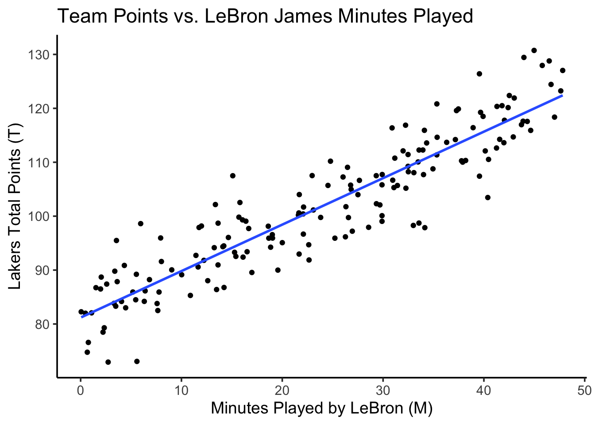

Hello DSAN 5300 Section 01 friends! First, please take a look at the course-wide study guide that was sent out over email by Prof. James! This guide just contains my additional summarization and some practice problems that I hope might link the concepts to stuff I’ve mentioned specifically in Section 01.
The key topics that the Quiz will cover can be organized into the following four subheadings:
(1) “Parametric” Modeling
What does it mean to have a “parametric” model? For example, in a model such as regression, which we write as
\[
Y = \beta_0 + \beta1_ X + \varepsilon,
\]
which of the things in that equation are parameters of the model and which are not parameters (for example, which are just variables that we plug data into)?
(2) Optimization in General
Once we’ve identified the parameters in a model, how do we evaluate how “good” or “bad” a certain setting for the parameters is? (The answer being, a loss function)
(3) Gradient Descent
Once we have a loss function, how does the gradient allow us to choose a random value for the parameter and then “make our way” towards the optimal value? The answer to this question is the main content in this previous writeup
As a refresher, a gradient is just the vector equivalent of a derivative. For example, in calculus we learn how
\[
f(x) = x^2
\]
has a derivative
\[
\frac{\partial f}{\partial x} = 2x.
\]
So in this class, if \(\mathbf{x}\) is now a vector like \(\mathbf{x} = (x_1,x_2)\) instead of just a single number, the gradient or vector-valued derivative of \(f\) with respect to \(\mathbf{x}\), \(\nabla_{\mathbf{x}} f\), is
If it helps, try to notice/keep in mind how the \(\mathbf{x}\) in \(\frac{\partial f}{\partial \mathbf{x}}\) is a vector, whereas the \(x_1\) in \(\frac{\partial f}{\partial x_1}\) is a scalar. In other words, although the first and second terms in this expression may look scary, each entry within the parentheses on the RHS of that equality (the third term) is just the “regular” univariate derivative that you learn in calculus class!
(4) More Efficient Optimization Methods
Here the idea (or, the way I see these “fancier” methods, at least) is, they use additional information about the loss function above and beyond just \(L(x)\) and its derivative \(L'(x)\).
So, Newton’s method for example uses the second derivative \(L''(x)\) as an additional piece of information about the curvature of the loss function, whereas the secant method is slower than Newton’s method but doesn’t require us to know this second derivative \(L''(x)\) (since it approximates it).
A Full-On Lecture Replacement
To try and fully “fill in” the missing week here, I can just give you all the resource that is literally a recording of the class I learned this stuff from, and that I later TAed. That way if you have additional questions I’ll be able to refer specifically to the examples/materials that Prof. Ng uses in the following video:
Practice Problems
Problem 1: Handling Binary Features
A team of data scientists working for the Los Angeles Lakers NBA team has developed a basic single linear regression model relating the number of minutes played by LeBron James\(M\) to their team’s total points\(T\) in a game:
\[
T = \beta_0 + \beta_1 M
\]
They then estimated \(\beta_0\) and \(\beta_1\) from data on the past two seasons, arriving at estimates
\[
\widehat{\beta}_0 = 80 \text{ and }\widehat{\beta}_1 = 0.9
\]
Plotting the resulting regression estimation function \(\widehat{t} = 80 + 0.9 m\) on top of the data, they therefore obtain a figure that looks as follows:
Code
library(tidyverse) |>suppressPackageStartupMessages()total_games <-164minute_vals <-runif(total_games, min=0, max=48)pts_raw <-80+0.9* minute_valspts_noise <-rnorm(total_games, mean=0, sd=5)pts_obs <- pts_raw + pts_noiselebron_df <-tibble(minutes=minute_vals, points=pts_obs)lebron_df |>ggplot(aes(x=minutes, y=points)) +geom_point() +geom_smooth(method='lm', formula='y ~ x', se=FALSE) +labs(title="Team Points vs. LeBron James Minutes Played",x ="Minutes Played by LeBron (M)",y ="Lakers Total Points (T)" ) +theme_classic(base_size=14)

However, as of this morning, a big trade has been made sending Slovenian basketball phenom Luka Doncic to the Lakers(!)
So, the Lakers’ data science team is frantically running simulations to model the potential impact Luka will have on their team’s performance, and especially how it will affect their model plotted above, of team performance vs. LeBron’s minutes played. They therefore construct a dummy variable\(D\), for Doncic, which has the value 1 for games with Doncic on the Lakers and 0 for games without Doncic on the Lakers.
In the next two questions you will consider two hypotheses regarding Luka’s potential contribution, and the appropriate model for each of the two hypotheses!
Hypothesis 1: Additive Contribution
A member of the data science team named Addison hypothesizes that Luka’s contribution will be “additive” with respect to LeBron’s performance, in the sense that:
The team’s total points will now shift upwards by some amount, regardless of the number of minutes played by LeBron, but
The team’s total points will still increase by about 0.9 points per additional minute that LeBron plays.
For example, Doncic scored about 34 points per game last season, while the player he was traded for, Anthony Davis, scored about 25 points per game in that same season, so (by this “back of the envelope” calculation) Addison hypothesizes that the team’s total points with Doncic may be 9 higher than its total points without Doncic, for any amount of minutes that LeBron plays.
Using this information,
Write out a linear regression model which would allow this hypothesis to be tested (once data from games with Luka comes in),
Use the “split into cases” method from class to specify what the prediction equation will look like when \(D = 0\) and when \(D = 1\), and then
Write the hypothesis explicitly in terms of the parameters (\(\beta_0\), \(\beta_1\), etc.) of the regression model.
Solution:
Since Addison’s hypothesis implies that the slope from the above model would remain the same, but that the intercept would increase, we do not need an interaction term between \(M\) and \(T\) in our model. Therefore, we can model Addison’s hypothesis using a simple MLR model without any interaction terms:
\[
T = \beta_0 + \beta_1 M + \beta_2 D
\]
Next, we can split this modeling equation into cases, to see what predictions it will generate when \(D = 1\) separately from the predictions it will generate when \(D = 0\):
\[
T = \begin{cases}
\beta_0 + \beta_1 M &\text{if }D = 0 \\
\beta_0 + \beta_1 M + \beta_2 &\text{if }D = 1
\end{cases}
\]
Lastly, we can see from these cases that the value of \(\beta_2\) specifcally is what would tell us how much the Lakers’ total points shift in games with Doncic (\(D = 1\)) compared to games without Doncic (\(D = 0\)). So, Addison’s hypothesis can be written as
\[
\mathcal{H}_{\text{Addison}}: \beta_2 = 9
\]
With the hypothesis written out in this way, we could now test Addison’s hypothesis by collecting data, estimating \(\beta_2\) from this data, and using e.g. the standard error, \(T\)-statistic, and \(p\)-value information provided in the regression output!
Hypothesis 2: Interactive Contribution
A second member of the data science team named Interacthony hypothesizes that Luka’s contribution will in fact “boost” LeBron’s performance, in the sense that:
The team’s total points will now shift upwards by some amount, even when LeBron doesn’t play at all, but also
Doncic and LeBron will complement each other’s play style, such that LeBron will now “convert” each additional minute of play into a greater number of points for the team.
For example, whereas in the model plotted above each additional minute played by LeBron translated into an additional 0.9 points for the Lakers, Interacthony now hypothesizes (in addition to Addison’s hypothesis from the previous question) that in games with Doncic (games with \(D = 1\)) each additional minute played by LeBron will translate into an additional 1.1 points for the Lakers.
So, like in the previous part, your task is to:
Write out a linear regression model which would allow Interacthony’s two hypotheses to be tested (once data from games with Luka comes in),
Use the “split into cases” method from class to specify what the prediction equation will look like when \(D = 0\) and when \(D = 1\), and then
Write the two hypotheses explicitly in terms of the parameters (\(\beta_0\), \(\beta_1\), etc.) of the regression model.
Solution:
In this case, we need a model which will allow both the interceptand the slope of the earlier model to change based on whether or not Doncic is on the Lakers. So, we now need an interaction term, to enable both intercept and slope to vary, as we discussed in class. The base model we should use here is therefore
\[
T = \beta_0 + \beta_1 M + \beta_2 D + \beta_3 (M \times D)
\]
Writing out the cases for \(D = 0\) and \(D = 1\) reveals why this interaction term is necessary to allow both intercept and slope to vary:
\[
\begin{align*}
T &= \begin{cases}
\beta_0 + \beta_1 M &\text{if }D = 0 \\
\beta_0 + \beta_1 M + \beta_2 + \beta_3 M &\text{if }D = 1
\end{cases} \\
&= \begin{cases}
\beta_0 + \beta_1 M &\text{if }D = 0 \\
(\beta_0 + \beta_2) + (\beta_1 + \beta_3) M &\text{if }D = 1
\end{cases}
\end{align*}
\]
And so we see that \(\beta_2\) represents the amount by which the intercept would change and \(\beta_3\) the amount by which the slope would change for datapoints with \(D = 1\). Thus, we can write Interacthony’s two hypotheses as: